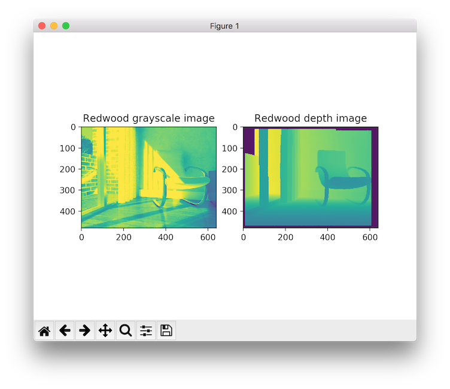

Redwood dataset¶
This tutorial reads and visualizes an RGBDImage from the Redwood dataset [Choi2015].
5 6 7 8 9 10 11 12 13 14 15 16 17 18 19 20 21 22 23 24 25 26 27 28 29 30 31 32 | # examples/Python/Basic/rgbd_redwood.py
import open3d as o3d
import matplotlib.pyplot as plt
if __name__ == "__main__":
print("Read Redwood dataset")
color_raw = o3d.io.read_image("../../TestData/RGBD/color/00000.jpg")
depth_raw = o3d.io.read_image("../../TestData/RGBD/depth/00000.png")
rgbd_image = o3d.geometry.RGBDImage.create_from_color_and_depth(
color_raw, depth_raw)
print(rgbd_image)
plt.subplot(1, 2, 1)
plt.title('Redwood grayscale image')
plt.imshow(rgbd_image.color)
plt.subplot(1, 2, 2)
plt.title('Redwood depth image')
plt.imshow(rgbd_image.depth)
plt.show()
pcd = o3d.geometry.PointCloud.create_from_rgbd_image(
rgbd_image,
o3d.camera.PinholeCameraIntrinsic(
o3d.camera.PinholeCameraIntrinsicParameters.PrimeSenseDefault))
# Flip it, otherwise the pointcloud will be upside down
pcd.transform([[1, 0, 0, 0], [0, -1, 0, 0], [0, 0, -1, 0], [0, 0, 0, 1]])
o3d.visualization.draw_geometries([pcd])
|
The Redwood format stored depth in a 16-bit single channel image. The integer value represents the depth measurement in millimeters. It is the default format for Open3D to parse depth images.
11 12 13 14 15 16 | print("Read Redwood dataset")
color_raw = o3d.io.read_image("../../TestData/RGBD/color/00000.jpg")
depth_raw = o3d.io.read_image("../../TestData/RGBD/depth/00000.png")
rgbd_image = o3d.geometry.RGBDImage.create_from_color_and_depth(
color_raw, depth_raw)
print(rgbd_image)
|
The default conversion function create_rgbd_image_from_color_and_depth creates an RGBDImage from a pair of color and depth image. The color image is converted into a grayscale image, stored in float ranged in [0, 1]. The depth image is stored in float, representing the depth value in meters. print(rgbd_image) yields:
RGBDImage of size
Color image : 640x480, with 1 channels.
Depth image : 640x480, with 1 channels.
Use numpy.asarray to access buffer data.
The converted images can be rendered as numpy arrays.
18 19 20 21 22 23 24 | plt.subplot(1, 2, 1)
plt.title('Redwood grayscale image')
plt.imshow(rgbd_image.color)
plt.subplot(1, 2, 2)
plt.title('Redwood depth image')
plt.imshow(rgbd_image.depth)
plt.show()
|
Outputs:
{kind=link}
The RGBD image can be converted into a point cloud, given a set of camera parameters.
26 27 28 29 30 31 32 | pcd = o3d.geometry.PointCloud.create_from_rgbd_image(
rgbd_image,
o3d.camera.PinholeCameraIntrinsic(
o3d.camera.PinholeCameraIntrinsicParameters.PrimeSenseDefault))
# Flip it, otherwise the pointcloud will be upside down
pcd.transform([[1, 0, 0, 0], [0, -1, 0, 0], [0, 0, -1, 0], [0, 0, 0, 1]])
o3d.visualization.draw_geometries([pcd])
|
Here we use PinholeCameraIntrinsicParameters.PrimeSenseDefault as default camera parameter. It has image resolution 640x480, focal length (fx, fy) = (525.0, 525.0), and optical center (cx, cy) = (319.5, 239.5). An identity matrix is used as the default extrinsic parameter. pcd.transform applies an up-down flip transformation on the point cloud for better visualization purpose. This outputs:
{kind=link}